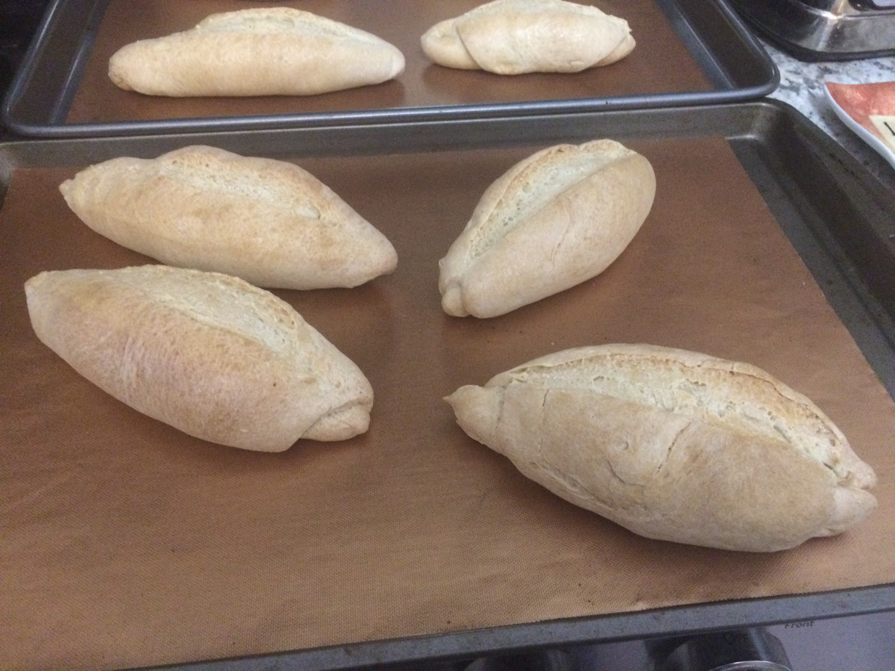

Ingredients
- 500 g of wheat flour, (4 1/2 cups) (preferably 12 g of protein)
- 320ml warm water (NOT hot, it would kill the yeast) 1 1/3 cup + 2 tbsp. approximately.
- 10 g of instant dry yeast (1 tbsp. Tbsp) NOTE: IF YOU USE FRESH YEAST use 30 grams. THREE of what you would use dry yeast is regularly used.
- 10 grams of salt (1/2 tbsp. Tbsp)
- 1 tbsp. of sugar
*EYE! THE MUGS TO WHICH I DO REFERENCE, ARE MEASURING CUPS OF 225 ML. and ALWAYS MEASURE THE RAS
Steps
- The first thing you have to do is put the fresh yeast to dissolve in the water. On the other hand, in a bowl, you place the flour, salt and sugar. Mix well and add the water with the yeast already dissolved. You are forming the dough and in the final moments you add the fat you have chosen. Knead until smooth.
- Give it a 10 minute break and divide in half. You can refine the ends of one of the buns, like I did.
- You will sprinkle with flour and make the cuts that you like the most.
- Leave them in a warm place until they double in volume.
- Only there will they be ready to go to the oven at a temperature of 200 degrees.